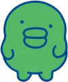
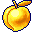

Узнай, чем живут герои Tamagotchi Paradise. Открой портрет, чтобы познакомиться с тамой, подобрать корм и добавить его в свою коллекцию.

Для Neon Planets корм пока не указан в таблице вики. Ниже можно выбрать таму по имени или планете.
🍱 Выбрать корм по картинке
🌱 Суша · Land
🫧 Вода · Water
☁️ Небо · Sky
🎋 Лес · Forest
🌺 Тропики · Tropical
❄️ Ледник · Ice
На стадии Kid для одного пищевого значка нужно 5 очков одного типа. К моменту эволюции нужный значок должен встречаться чаще других среди последних четырёх. Таблица корма ↗
Как считать ошибки ухода и растить таму
Baby · выбери поле. Оставь Babymarutchi в нужном регионе. Каждые 15 минут появляется значок поля. Когда наберутся четыре одинаковых, открой Tama Cell и подтверди эволюцию в Kid.
Kid · выбери корм. Примерно за 24–28 часов вырасти нужного Young. Каждые 5 очков одного типа еды дают значок. Вид определяет самый частый значок среди последних четырёх. Самый простой путь — давать блюда одной группы и оставаться в выбранном поле. После перехода в другое поле и пребывания там больше часа пищевые значки сбрасываются.
Kid и Young · считай ошибки. Если тама зовёт из-за пустой шкалы сытости, счастья или болезни, устрани причину за 15 минут. Пропущенный вызов даёт ошибку. Счёт идёт со стадии Kid и сохраняется при переходе в Young. В Tama Cell ошибки выглядят как завитки, видно максимум шесть.
Young · проверь шкалы. До взрослой формы остаётся около 24 часов. Для столбца «0 ♡» нужны ноль ошибок и минимум пять полных заполнений каждой шкалы. Считай онигири 🍙 за сытость и солнышки ☀️ за счастье. Для соседнего столбца проще получить ровно одну ошибку. При нуле он сработает, если хотя бы одна шкала заполнялась меньше пяти раз.
Например, для Mametchi выбери сушу, корми Land Kid морковью или яблоками до Toddle Young. Сохрани ноль ошибок и собери хотя бы 5 🍙 и 5 ☀️ к взрослению. Для Mimitchi поле и корм те же, но достаточно одной ошибки.
На Orange Tropics и White Glacier золотой персик

Golden Peach за 9 яиц в Egg Hunt снимает одну ошибку.
✧ · секретный тама версии Pink Land. Вырасти в этом поле одного из трёх Young (Roar Young, Toddle Young, Lick Young). Пока он Young, соедини своё устройство по очереди с двумя другими версиями, различающимися между собой.
✧ · секретный тама версии Blue Water. Вырасти в этом поле одного из трёх Young (Glide Young, Leap Young, Paddle Young). Пока он Young, соедини своё устройство по очереди с двумя другими версиями, различающимися между собой.
На устройстве названия Flap Young и Chirp Young перепутаны. Для выбора ветки ориентируйся на корм.
✧ · секретный тама версии Purple Sky. Вырасти в этом поле одного из трёх Young (Flap Young, Chirp Young, Bumble Young). Пока он Young, соедини своё устройство по очереди с двумя другими версиями, различающимися между собой.
✧ · секретный тама версии Jade Forest. Вырасти в этом поле одного из трёх Young (Roar Young, Toddle Young, Chirp Young). Пока он Young, соедини своё устройство по очереди с двумя другими версиями, различающимися между собой.
✧ · секретный тама версии Orange Tropics. Вырасти в этом поле одного из трёх Young (Roar Young, Toddle Young, Lick Young). Пока он Young, соедини своё устройство по очереди с двумя другими версиями, различающимися между собой.
✧ · секретный тама версии White Glacier. Вырасти в этом поле одного из трёх Young (Roar Young, Glide Young, Toddle Young). Пока он Young, соедини своё устройство по очереди с двумя другими версиями, различающимися между собой.
🥚 Особая форма
можно получить в любом из шести полей выше. На стадии Baby меняй поле до истечения очередных 15 минут, чтобы за четыре часа не набралось четырёх значков одного поля. Эта форма не даёт потомства.
🪐 Neon Planets
У этой версии три планеты. В вики уже указаны семейства, но для них пока не заполнены конкретный корм и условия ухода. Ниже можно проверить, на какой планете искать своего таму.